iPhone · iPad · Mac
Studio product photos. On your own device.
In short. StudioDrop removes the background from product photos and drops the item onto white, transparent or any colour with a soft studio shadow — running entirely on your own iPhone, iPad or Mac. Nothing is uploaded, there are no credits or subscription, and it works offline. £7.99 on iPhone and iPad, £19.99 on Mac, both one-time purchases. Exports at a 2000 pixel long edge in seven shapes.
Background removal for people who sell things online — running entirely on the iPhone, iPad or Mac you already own. No cloud service. No AI credits. No monthly fee. Nothing uploaded, ever.
One-time purchase · Unlimited photos · 100% on-device · Works offline
Your backdrop, your shape — try it
Backdrop
Shape
Every backdrop and shape shown here is in the app. The long edge is always 2000 px.
Real photo, real result
A phone snap on a scruffy table. One tap later.
No studio, no lightbox, no retouching. This is an actual item shot against a plain wall and processed on the device it was taken with.
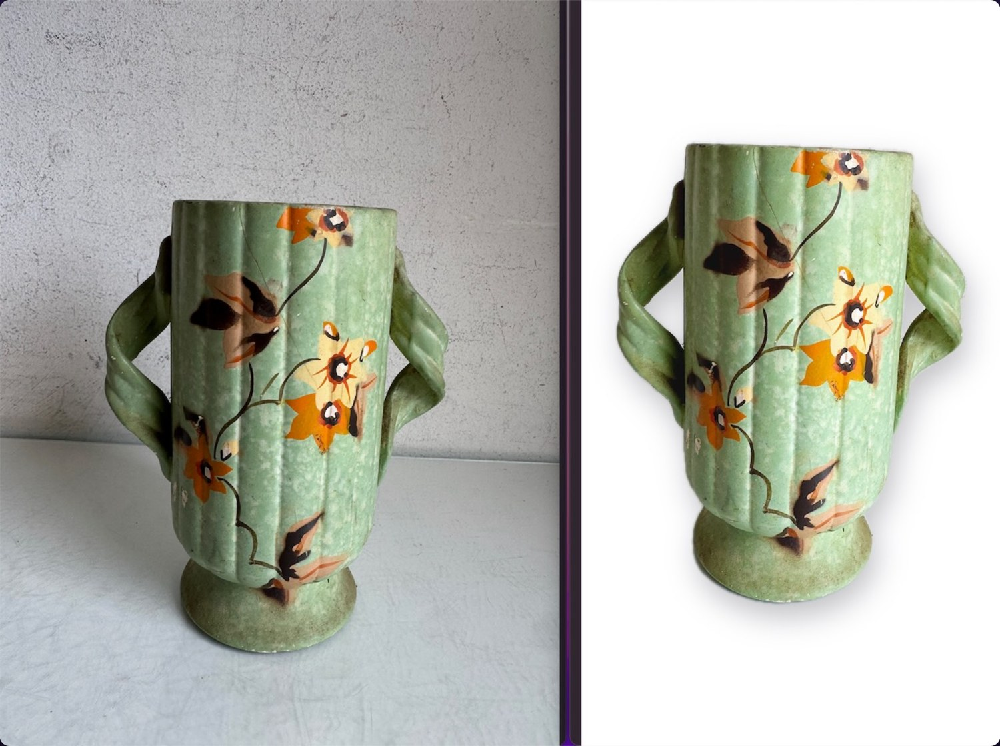
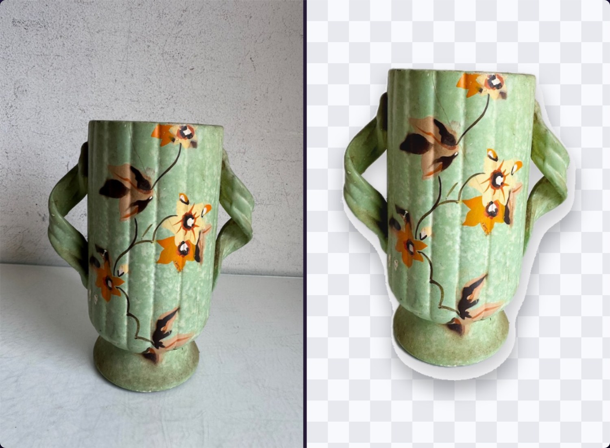
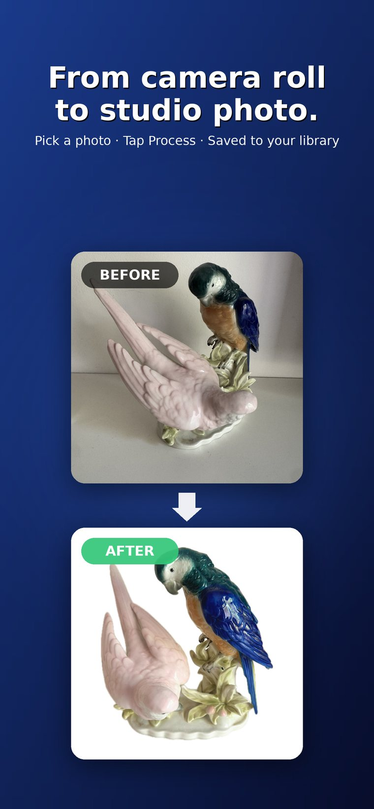
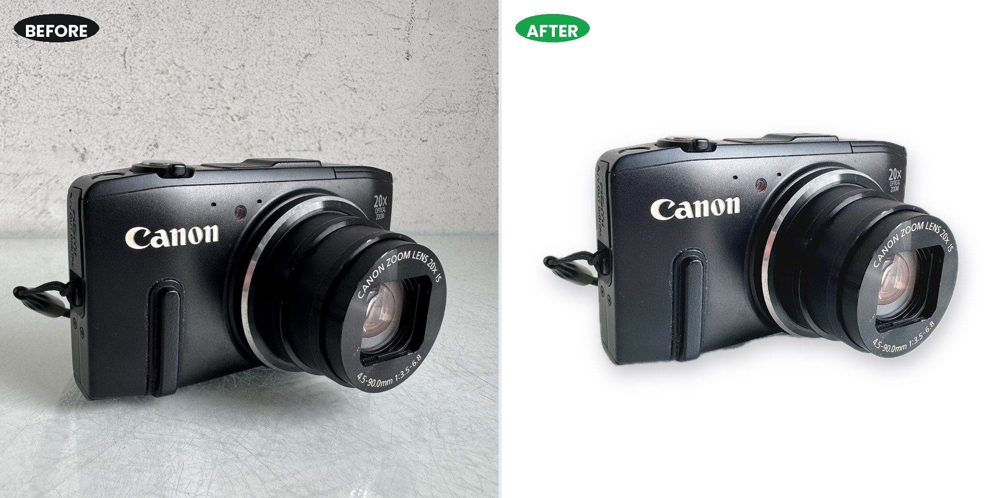
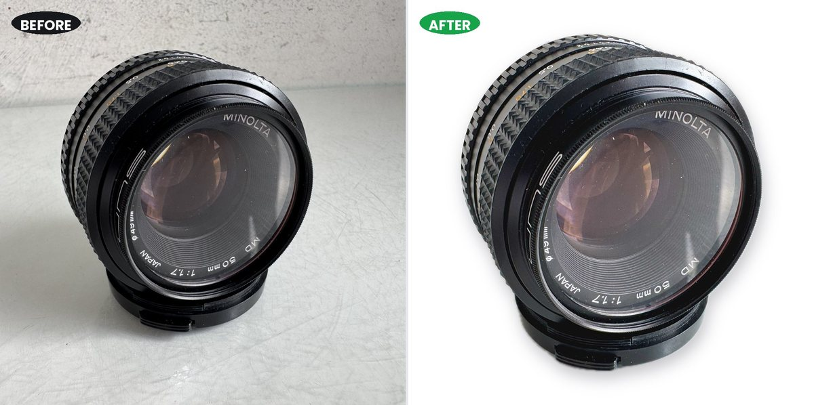
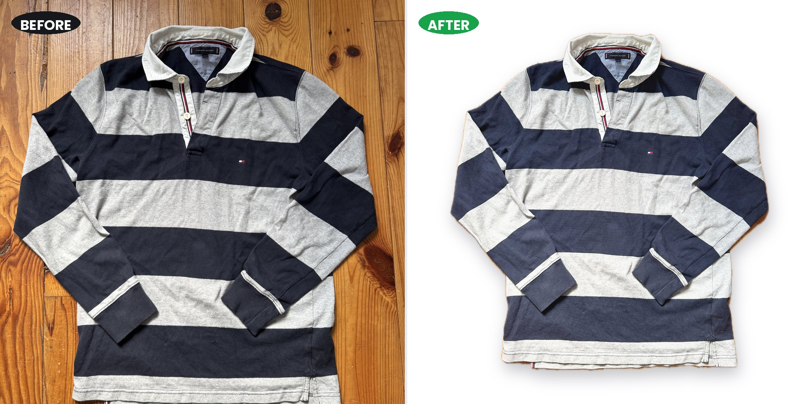
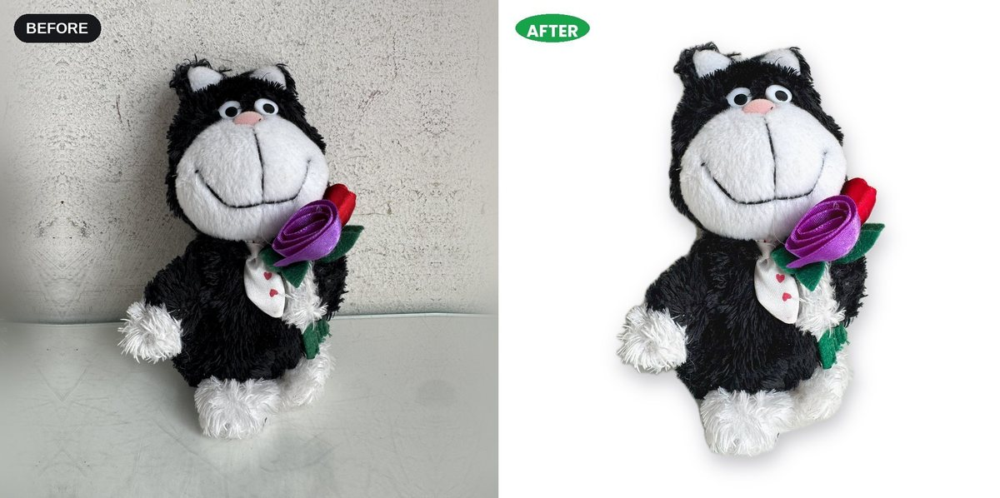
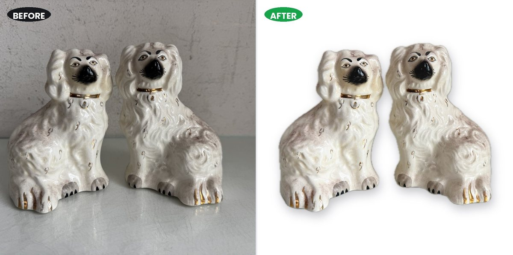
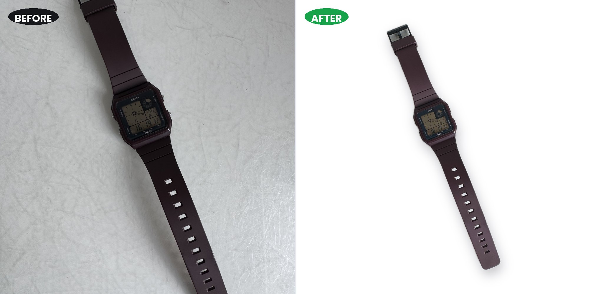
Why it exists
Every other background remover wants a monthly fee
Built by a reseller who got tired of paying a subscription for something the phone in his pocket could already do.
Cloud background removers
- Monthly subscription, or a credit balance that runs out mid-listing-day
- Every photo uploaded to someone else's servers
- An account, a login, a password reset
- Upload and download round-trip for every single image
- Useless with no signal
- Price goes up; you find out by email
StudioDrop
- One purchase. Unlimited photos, permanently
- Nothing leaves your device — no servers involved
- No account, no sign-up, no watermarks
- Fast, because there is no round-trip
- Works in aeroplane mode, in a lock-up, anywhere
- The price you paid is the price forever
What it does
Built for listing days
Drop photos in. Get listing-ready images back. That's the whole app.
Nothing leaves your device
No uploads, no servers, no account. Your product photos stay on your own hardware — which also means it works with no signal at all. The App Store privacy label reads Data Not Collected.
No subscription, no credits
Not a monthly plan, and not a balance that runs dry halfway through a hundred-item listing session. One purchase, unlimited photos, free updates.
Fast, because it's local
No upload-and-download for every image. Apple's on-device machine learning does the work using the chip you already paid for. On Mac the engine loads once and stays warm.
Batch a whole shoot
Pick everything at once and process in a single tap — or on Mac, drag in a folder of five hundred. Results land in a tidy album or folder. Your originals are never altered.
Your backdrop
Pure white, transparent PNG, nine curated colours chosen to flatter product shots, or any colour from the full wheel. On Mac you can also drop in your own image for a branded backdrop.
Your shape
Square 1:1 is the default because most marketplaces prefer it — but portrait, tall, vertical and wide are one tap away. The long edge is always a crisp 2000 pixels, so quality never drops.
Studio shadow & enhance
A soft, professional shadow underneath for depth, then automatic sharpening, brightening and colour correction — the difference between "cut out" and "photographed properly".
Every format you'll throw at it
HEIC straight off your iPhone, plus JPG, PNG, WebP and TIFF. Smart filenames mean duplicates never overwrite each other.
The guide is built in
Cutout quality depends on the source photo, so both apps carry a photography guide behind the "?" button. Five minutes of setup makes every photo afterwards come out right.
Two apps, one workflow
Shoot on your phone. Or work at your desk.
Same on-device engine, identical results. They're separate purchases and each works completely on its own — pick the one that matches how you list.
StudioDrop Go
Photograph an item and list it without ever going back to a computer.
- Pick photos straight from your library
- Batch a whole shoot in one tap
- Results save back into a "StudioDrop" album
- White, transparent, nine colours or the full wheel
- Five aspect ratios, 2000 px long edge
- Works with no signal at all
- iOS / iPadOS 17 or later · 3.6 MB
StudioDrop for Mac
Drag in a whole folder from Finder and process hundreds at desktop speed.
- Batch entire folders — 500+ photos in one go
- Engine loads once and stays warm between batches
- Your own image as a branded backdrop
- HEIC, JPG, PNG, WebP and TIFF in
- Smart filenames, originals never touched
- Available in 52 languages
- macOS 14+ on Apple Silicon · 68.4 MB
Most sellers who shoot and list on their phone start with Go. If you shoot to a camera or list in long sessions at a desk, buy the Mac app. Plenty of people own both.
How a listing day goes
Three steps, then you're listing
-
Shoot on a plain, contrasting background
Daylight near a window, one item filling the frame, nothing else in shot. Five minutes of setup makes everything afterwards work. The full guide is here.
-
Select the lot and press go
Pick your backdrop and shape once. Select every photo from the shoot. One tap. Nothing uploads, so it starts immediately.
-
Upload straight to your listings
Finished images land in a dedicated album or folder at 2000 px, already the right shape for wherever you sell. Your originals are untouched.
Where people use it
If you photograph stock, this is for you
Built for eBay listing days, but the output is just clean product photos — which is what every selling platform wants.
Marketplaces
eBay, Amazon, Etsy, Vinted, Depop, Poshmark, Mercari, Facebook Marketplace, Gumtree, Vestiaire, Whatnot. One square export covers most of them — here's the size table.
Your own shop
Shopify, Etsy, WooCommerce, Squarespace, Wix, Big Cartel. A consistent white backdrop across a catalogue is the difference between "shop" and "someone's spare room".
Trade & volume
House clearance, estate sales, auction houses, charity shops, consignment, car boot and market traders — anyone photographing hundreds of lots a week.
Collectables
Trading cards, coins, stamps, comics, vinyl, watches, jewellery, antiques. Cataloguing a collection is the same job as listing it.
Makers & small brands
Handmade and craft sellers, print-on-demand, dropshippers, and anyone building a lookbook who needs every product shot to match.
Social selling
Instagram and TikTok shops, Pinterest, WhatsApp and Facebook groups. Export 4:5 or 9:16 and the item fills the screen instead of floating in a square.
Services
Virtual assistants and listing services working through a client's backlog, photographers offering ecommerce packages, and agencies handling catalogue refreshes.
Not selling at all
Home inventories for insurance, probate and valuation records, school and club equipment logs, and museum or archive cataloguing.
Anything with a backdrop problem
If the photo is fine but the kitchen behind it isn't, that's the whole job. No studio, no lightbox, no retouching.
Get flawless cutouts
The app is only half of it
StudioDrop replaces and enhances the background — it just needs a clean edge to find. The single biggest difference between a perfect cutout and a ragged one is the photo you started with.
The six things that matter take five minutes to set up once and then work forever: even light, a plain contrasting backdrop, good tonal separation, one item filling the frame, a steady camera, and controlled reflections.
In the app
Nothing you don't need
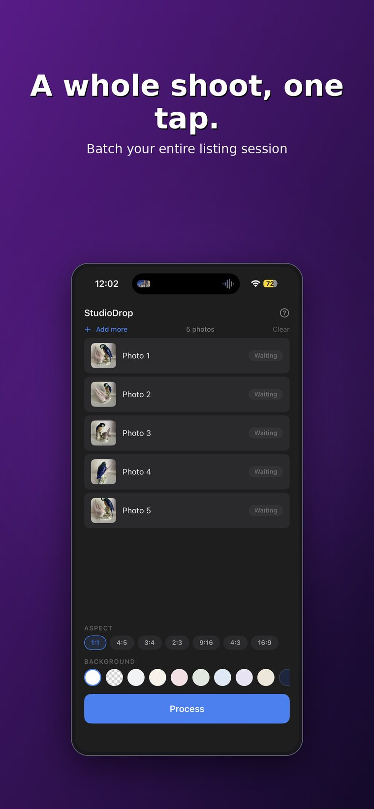
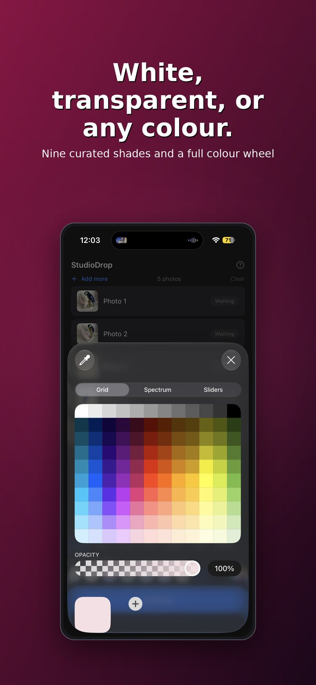
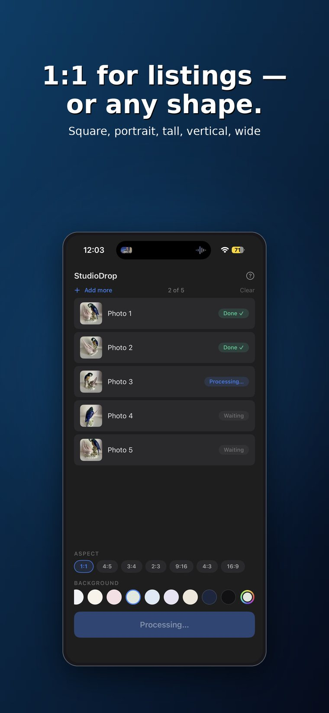
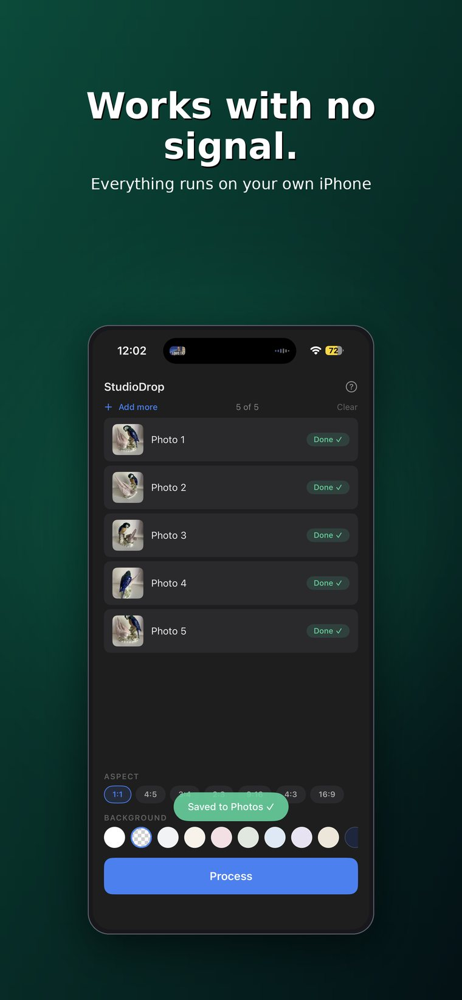
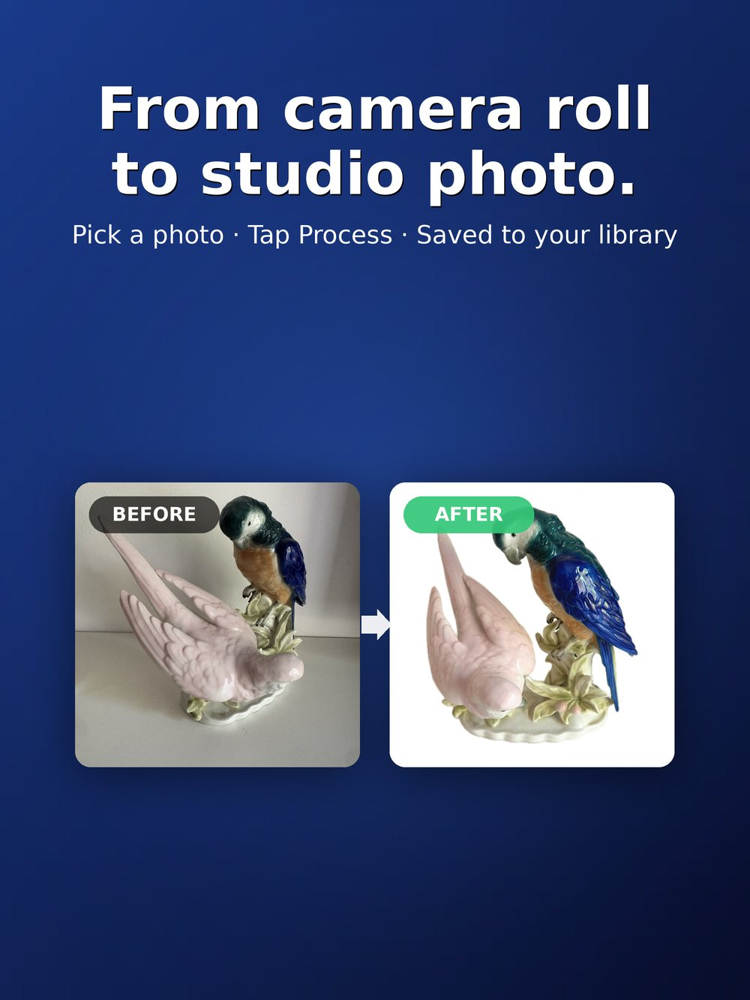
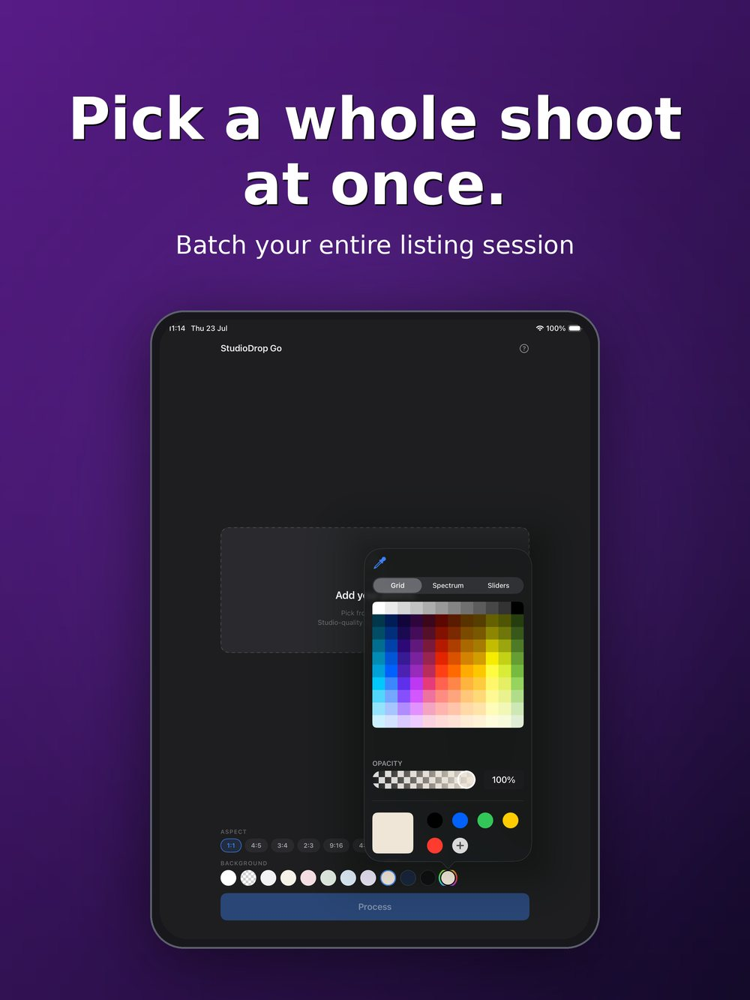
Full quality on iPhone and iPad
Questions
Before you buy
Do my photos get uploaded anywhere?
No. All processing happens on your device using Apple's Vision framework. The apps make no network connections at all — they work fully offline, and you can verify that with any network monitoring tool.
Is it really a one-time purchase?
Yes. Buy it once and it's yours — unlimited photos, no credits, no renewal, free updates. There's no account and nothing to cancel.
What's the difference between StudioDrop and StudioDrop Go?
Same product, different devices. StudioDrop Go (£7.99) is the iPhone and iPad app — pick photos from your library and process them anywhere. StudioDrop (£19.99) is the Mac app — drag in whole folders for bulk sessions, with a few desktop extras like custom image backdrops. Both use the same on-device engine and produce identical results. They're separate purchases and each works completely on its own.
Why is the Mac app more expensive?
It's aimed at higher-volume work — batching hundreds of files from Finder in a sitting, a warm engine between batches, custom image backdrops, and every input format. If you list a handful of items at a time from your phone, Go is the one you want and it's the cheaper answer.
What if a cutout isn't perfect?
Results depend on the source photo. The big three are even lighting, an uncluttered backdrop, and good tonal contrast between the item and what's behind it — see the photo guide. Fine hair, wire, mesh and clear glass are hard for any tool, cloud or local. If you hit something the app handles badly, email me a sample; that's how it gets better.
Are there any credits or usage limits?
None. It isn't a cloud service, so there's nothing to meter. Process as many photos as you like, forever, for the one purchase price.
What aspect ratio should I use?
Most reselling platforms prefer square 1:1, which is the default. Portrait 4:5 suits Instagram feed, 2:3 suits pin boards, 9:16 suits stories and short video, and 16:9 suits banners. The long edge is always 2000 pixels, so quality never drops.
What do the apps require?
iPhone and iPad: iOS or iPadOS 17 or later. Mac: macOS 14 or later on a Mac with an Apple M1 chip or later. Intel Macs aren't supported, because the on-device engine relies on Apple Silicon.
Can I use the images commercially?
They're your photos of your items — StudioDrop just processes them. There's no watermark, no licence restriction, and no claim on anything you produce.
Does it work on Windows or Android?
No. The whole approach depends on Apple's on-device machine learning, which is what makes it fast, private and free of running costs. There's no plan for other platforms.
Stop renting your own phone's abilities
Buy once. Own it. List faster.
One purchase, unlimited photos, nothing uploaded and nothing to cancel.
UK prices; your local App Store shows yours. Family Sharing supported on both.